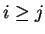

Next: Enforcing symmetry
Up: Step 2: From features
Previous: Removing low ranking matches
Contents
Following this, each point in the grid is given a unique identifying number from zero to one
less than the total
number of points. These numbers are assigned to points in sorted hierarchical
order, first by one coordinate and then by the other. Cells for
which  are not included.
root
2003-06-27